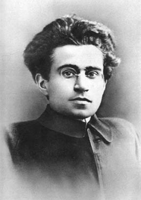

Money And Power

|
The unequal distribution of wealth and power in society promotes conflict among its members. As you might remember, Karl Marx (German philosopher and sociologist) was introduced in Unit 1 on schools of thought in sociology. He carefully examined the inequalities between classes of society as a way of understanding who we are and the facets of our social situation. Considered as the father of modern sociology, Marx wrote extensively about social class and how it is shaped by conflict. |
The Bourgeoisie and the Proletariat
- According to Marx, society is composed of two major social classes: the bourgeoisie and proletariat or the “haves” and “have-nots. The bourgeois are members of the property-owning class or the owners of the means of production. The proletariat is composed of the lower working class or the wage earners who sell their skills for money. In-between these two groups are the petty-bourgeois or the lower middle class including the tradespeople, shop owners, and craftspeople.
- The bourgeoisie, according to Marx derives their power from controlling and owning the means of production. They are the capitalists who own and run large-scale production of goods and services for society’s consumption
- The proletarians work for the capitalists and they are the target consumers of the products of big companies. Marx believed that the working class is exploited and oppressed by the capitalists through the mechanism of capitalism.
- Capitalism is an economic system where the means of production is privately owned and profit is earned in competitive markets. He also argued that the system is perpetuated by social institutions like governments or legal systems which act as tools for the ruling class to further their agendas.
Marx’s Labour Theory of Value and Alienation
- Marx went further in his conceptualization of how poverty, unemployment, and other economic crises were created. Troubles in the state of the economy, job security, saving for the future, and other non-ideal conditions shape how individuals view the environment. His labour theory of value purports that the value of economic goods is derived from the amount of labour used to produce them. It explains why goods are exchanged for a certain amount in the market. The more manufacturing involved in producing an item, the greater the labour costs to produce it.
- Marx’s theory of alienation says that under capitalism, the workers are alienated or disconnected from each other and the product of their labour.
- Workers become alienated from each other because they compete with each other for jobs and raises. Alienation from the products of their labour stems from the control the capitalists wield over the means of production, where members of the working class are separated from the final product of their work.
- Specialized labour in the assembly line where workers are only focused on specific tasks was introduced to promote maximum output from workers, but as a result, has completely alienated the workers from the entire production process. They cannot take pride in the final product and may not see themselves reflected in the economic system. Only when parts are assembled does the product become valuable.
- Modern machinery nowadays has taken the jobs of humans, only a few are kept to run and maintain the machines.
- This has all the more strengthened the already favourable position of the capitalists by saving money and earning maximum and generous profits.
Antonio Gramsci and Change

An Italian Marxist philosopher, Antonio Gramsci (1891-1937) also believed that the capitalist state-controlled society. Gramsci developed the idea of “hegemony” which is the control of one social group over another.
He saw the capitalist state as divided into two overlapping parts: the “political society” that rules through force and the “civil society” that rules through consent. Using this concept of consent and coercion, he noted that the ruling class or the bourgeoisie ruled with the consent of the subordinate class or the proletariats.
Read this article for further information.
- When the ruling class can secure the consent of other groups to accept what for them, the dominant one, is normal or abnormal, it becomes the social norm.
- Gramsci promoted this idea by introducing the concept of cultural hegemony where society is dominated by one ruling class and their beliefs and ideas are considered the cultural norm.
- A strong example is the idea of consumption where people are taught to want the newest products as advertised on television and other social media. As the masses consume more and more products, it only means more money for the ruling class which owns these products.
- In contrast to Marx’s belief in overthrowing the bourgeoisie, Gramsci supported the idea of a quiet revolution. For him, early education is the key to changing the future. Instilling these ideas, values and ideals to children at a young age, through the media, ensures that the next generation has revolutionary principles and a drive for change.
Multiple Choice
Multiple Choice
Multiple Choice
Multiple Choice
Multiple Choice